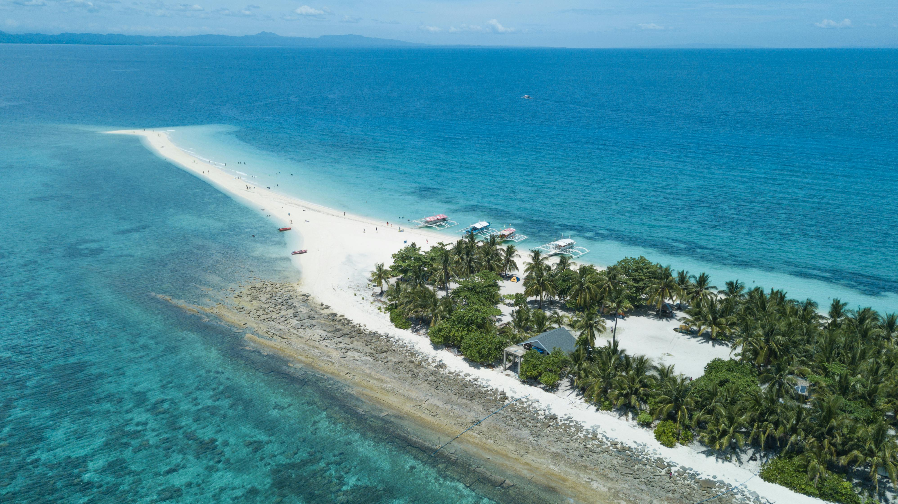

Jhumel Foyo
"Curating life one journey at a time. Currently chasing the beauty across the Philippines islands."
Saved Itineraries
 Palawan • 3 Days
Palawan • 3 Days
El Nido
Rizal • 1 DaysBinangonan

Leyte • 2 Days
"Curating life one journey at a time. Currently chasing the beauty across the Philippines islands."
Palawan • 3 Days

Leyte • 2 Days